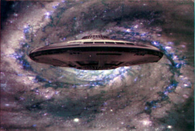

{kind=link}
{kind=link}
{kind=link}


Atlantis Models Sci-Fi/UFO kits

Kit #1001 & #1002
MSRP $12.00 & $13.00
$10.95 each from Mega Hobby
Images and text Copyright © 2009 by Matt Swan
I’ve always enjoyed building the esoteric or kit slightly off the beaten path and this has more than once taken me down the road of Sci-Fi modeling. Even here though, we have common kits so once again I find myself looking in the darker corners of the model shop’s inventory for that ‘something different’ kit. Today I found something peering back at me from that darkness. I have to admit that I did not find these on my own but was introduced to the Eve kit by a fellow modeler on the forum.
These kits were originally designed by EL Pangman and tooled in China but the company that owns them is a US company. When I first saw one of these it was just an on-line image with nothing to indicate the model’s actual size so I was somewhat surprised when I got my hands on one and found it to be very small. The Eve kit is listed as 1/864 scale and the TR-3E kit has no listed scale however the manufacture tells me it is about 1/144. This means we have one kit, the Eve, being about three inches in diameter and the second kit being about six inches. Each kits consists of very few parts with all the plastic pieces being cast in a semi-translucent milky white plastic but the exterior detail is crisp and fairly extensive. What it really boils down to here is that these kits are not an exercise in parts assembly but in painting.
The Eve kit includes a small pre-assembled lighting package with a button battery that fits into the bottom side of the fuselage where the translucent plastic allows the lights to glow through. These light rotate around the lighting package and look kind of cool. This kit uses a small rare earth magnet to hold the upper and lower halves together which allows for turning the light package on or on and changing the batteries should use start using this as a night light.
The TR-3E kit does not include a lighting package or the little magnet thing but does almost beg for the modeler to do something with lighting. This kit includes three small well detailed landing gear pieces for shelf display. Either of these kits would make a nice addition to a Sci-Fi collection but even better, they make great introduction to modeling kits for kids. Quite often I find the conversation amongst modelers turning to how to get kids involved in modeling and these kits seem perfect for that, they are simple, offer a great doorway to imaginative play yet have the capacity to entertain the more advanced modeler as well. Put these on your stocking stuffer shopping list.